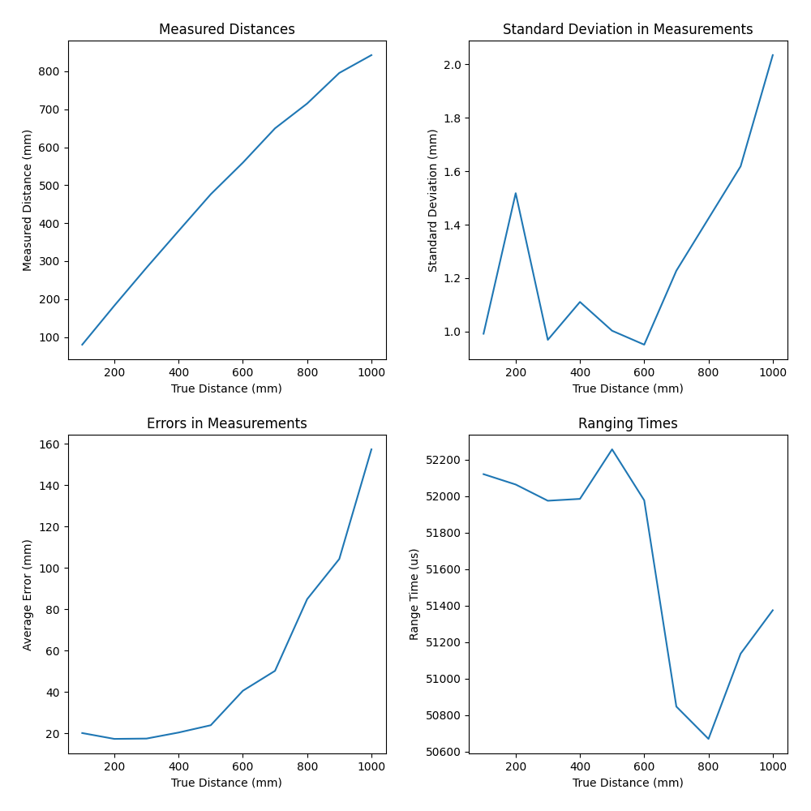
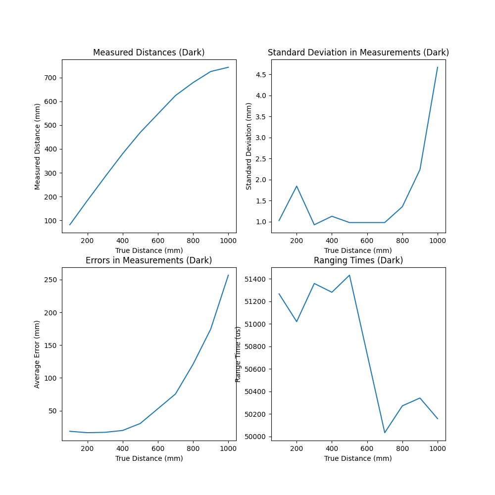

Lab 3: Time-of-Flight Sensing
Once we go our IMU working, we can begin to include Time-of-Flight (ToF) data to sense other objects around us.
Prelab
This week’s prelab included determining how our two ToF sensors (as well as the IMU) would be wired (noting that blue is SDA and yellow is SCL)

Battery Wire Colors
The wiring colors unconventionally change from the LiPo
battery to the Artemis; this was a result of our JST connector
physically connecting black to the + terminal (and red to
-), so the color convention was swapped to have correct voltage
polarity.
All of our sensor boards communicate over I2C; we can use the QWIIC breakout board to connect all of them to the Artemis’ I2C port, and strip/solder the QWIIC cables to our ToF sensors as appropriate
Two Time-of-Flight Sensors
To detect obstacles in multiple directions, our vehicle will use two ToF sensors. While their position may change based on future lab results, I currently plan to have them mounted on the front and side of the car. In a maze scenario, this will allow us to see obstacles directly in front of us as well as to one side, at the expense of behind us (likely not needed, as it’s where we came from) and to the other side (can be achieved by rotation).

Both ToF sensors have a
default I2C address of 0x52. If we attempt to communicate,
both will see thie address as theirs and attempt to respond appropriately,
causing a bus collision. However, their address is programmable; we can
therefore use the XSHUT pin to turn off one and change the address
of the other to avoid collisions.
Finally, the ToF sensors are more position-dependent than the IMU; I accordingly chose to use the long QWIIC cables for these to leave them the most freedom of position on the robot.
Lab Tasks
One Time-of-Flight Sensor
The first step was to connect one ToF sensor, to verify it could work alone.

Hardware setup with one ToF sensor (XSHUT not necessary)
We can use the Arduino example for scanning the I2C bus to verify the address.
{kind=link}
I2C scanning example
The address found is 0x29; while
this initially seems incorrect, we can notice that this is
0x52 >> 1, omitting the last bit. The last I2C
address bit is used to indicate direction; 0 for a write,
1 for a read. Because of this, the controlling device only
keeps track of the first 7 bits.
{kind=link}
An excerpt from the ToF datasheet, verifying our address expectation
Testing Range
For this lab, I chose the “Short” distance mode, as it is the best with ambient light, and the 1.3 meters of range seemed adequate for a robot of our size.
{kind=link}
#include "SparkFun_VL53L1X.h"
void setup() {
// ...
Wire.begin();
if (distanceSensor.begin() != 0) // Begin returns 0 on a good init
{
Serial.println("Sensor failed to begin. Please check wiring. Freezing...");
while (1);
}
distanceSensor.setDistanceModeShort();
Serial.println("Sensor online!");
}
For this experiment, I used a tape measure to get the true position, and used the IMU over Bluetooth to record and plot measured position, as well as ranging time.
{kind=link}
The testing setup for the Time-of-Flight sensor
for( int i = 0; i < ENTRIES_TO_RECORD; i++ ){
unsigned long start_time = micros();
distanceSensor.startRanging();
while (!distanceSensor.checkForDataReady()) {
delay(1);
}
ranging_time_entries[i] = micros() - start_time;
distance_entries[i] = distanceSensor.getDistance(); // Get the result of the measurement from the sensor
distanceSensor.clearInterrupt();
distanceSensor.stopRanging();
}
Sweeping a range of distances (incrementing by 10cm) resulted in the following data:
{kind=link}
We can see that the error significantly increased with the distance
being measured. Additionally, even close by, the sensor was consistently
off by ~20mm; this could be fixed by using the calibrateOffset or
setOffset functions of the sensor library. Finally, we can see that
ranging time varied a lot; while some is due to noise, some may also be
due to the sensor recognizing when it won’t make a good measurement
anyway, and choosing not to spend too much time on it.
Repeating this experiment in the dark not only confirmed the measurements, but gave confidence that our sensor was resilient to ambient light.
{kind=link}
Finally, I also wanted to see what the effect of manually varying the
timing budget with setTimingBudgetInMs would do to the results.
The distance data is interesting (even decreasing at one point), but
unsuprising; I ended up using a different sensor for this, and we already
knew they were unreliable at that distance. More interesting is the
standard deviation; higher range times yielded more precise results.
{kind=link}
Two Time-of-Flight Sensors
Now that we’ve verified functionality with one sensor, we can add the other!
{kind=link}
The testing setup for two Time-of-Flight sensors
We can instantiate the second distance sensor similar to the first, but
giving the XSHUT pin number as well. This allows us to use the
sensorOff function to turn it off with XSHUT, change the
I2C address of the other sensor, then use sensorOn to
turn it back on
#define XSHUT 8
SFEVL53L1X distanceSensor;
SFEVL53L1X distanceSensor2(Wire, XSHUT);
void setup(void)
{
Wire.begin();
// ...
pinMode(XSHUT, OUTPUT);
distanceSensor2.sensorOff(); // Turn the second sensor off
// Change the I2C address of the first sensor - default is 0x52
distanceSensor.setI2CAddress(0x54);
while (distanceSensor.begin() != 0) //Begin returns 0 on a good init
{
Serial.println("Sensor failed to begin. Please check wiring. Freezing...");
delay(500);
}
Serial.println("Sensor 1 online!");
distanceSensor2.sensorOn(); // Turn the second sensor back on
while (distanceSensor2.begin() != 0) //Begin returns 0 on a good init
{
Serial.println("Sensor failed to begin. Please check wiring. Freezing...");
delay(500);
}
Serial.println("Sensor 2 online!");
distanceSensor.setDistanceModeShort();
distanceSensor2.setDistanceModeShort();
}
To see just how fast we can get this data, we can have the sensors continuously ranging, and only collect data in the main loop when it’s ready:
void loop(void) {
int start_time = millis();
// Check the first distance sensor
if (distanceSensor.checkForDataReady()) {
int distance_1 = distanceSensor.getDistance();
distanceSensor.clearInterrupt();
Serial.print(" - Distance 1 (mm): ");
Serial.println(distance_1);
}
// Check the second distance sensor
if (distanceSensor2.checkForDataReady()) {
int distance_2 = distanceSensor2.getDistance();
distanceSensor2.clearInterrupt();
Serial.print(" - Distance 2 (mm): ");
Serial.println(distance_2);
}
// Print the time
int end_time = millis();
Serial.print("Loop Time (ms): ");
Serial.println(end_time - start_time);
}
Loop Time (ms): 4
- Distance 1 (mm): 4
Loop Time (ms): 7
Loop Time (ms): 4
Loop Time (ms): 4
Loop Time (ms): 4
Loop Time (ms): 4
Loop Time (ms): 4
Loop Time (ms): 3
- Distance 2 (mm): 553
Loop Time (ms): 7
Loop Time (ms): 3
Loop Time (ms): 3
Loop Time (ms): 3
Loop Time (ms): 4
Loop Time (ms): 4
Loop Time (ms): 4
Loop Time (ms): 4
Loop Time (ms): 4
Loop Time (ms): 3
Loop Time (ms): 3
- Distance 1 (mm): 5
Loop Time (ms): 7
We can see that we are able to loop much faster than our data acquisition; our limiting factor is our sensors’ ability to measure data, not our ability to receive it from them.
Time-of-Flight and IMU Data
Finally, we can combine all three sensors!
{kind=link}
The testing setup for two Time-of-Flight sensors and the IMU sensor, as seen in the wiring diagram
We can build on our previous code to log and send data in bulk.
float get_pitch() {
float x, z;
x = myICM.accX();
z = myICM.accZ();
return atan2(x, z) * 180 / M_PI;
}
float get_roll() {
float y, z;
y = myICM.accY();
z = myICM.accZ();
return atan2(y, z) * 180 / M_PI;
}
void log_data() {
for (int i = 0; i < ENTRIES_TO_RECORD; i++) {
data_time[i] = (int)millis();
// -------------------------------------------------------------------
// Distance Sensor 1
// -------------------------------------------------------------------
distanceSensor.startRanging();
while (!distanceSensor.checkForDataReady()) {
delay(1);
}
data_distance[i] =
distanceSensor.getDistance(); // Get the result of the measurement from
// the sensor
distanceSensor.clearInterrupt();
distanceSensor.stopRanging();
// -------------------------------------------------------------------
// Distance Sensor 2
// -------------------------------------------------------------------
distanceSensor2.startRanging();
while (!distanceSensor2.checkForDataReady()) {
delay(1);
}
data_distance_two[i] =
distanceSensor2.getDistance(); // Get the result of the measurement
// from the sensor
distanceSensor2.clearInterrupt();
distanceSensor2.stopRanging();
// -------------------------------------------------------------------
// IMU- Gyroscope
// -------------------------------------------------------------------
while (!myICM.dataReady()) {
delay(1);
}
myICM.getAGMT();
data_pitch[i] = get_pitch();
data_roll[i] = get_roll();
}
}
{kind=link}
IR Distance Sensors
In this lab, we used an IR Time-of-Flight sensor; however, other IR distance sensors exist, which we may wish to compare on key metrics. These include:
Triangulation/Angle-Based IR
Example: SHARP GP2Y0A21YK0F
Operation: Measure the angle of reflected IR light to determine position
Price: $6.19
Range: 10 - 80cm
Pros:
Simple calculations
Insensitive to target color/texture
Cheap
Cons:
Bulky (large sensor footprint)
Variation with ambient light
Amplitude IR
Example: VCNL4040
Operation: Meausure the strength of reflected IR light
Price: $7.50
Range: 0 - 20cm
Pros:
Simple calculations
Cheap
Cons:
Limited range
Sensitive to target color/texture and ambient light (may need to change integration time)
Time-of-Flight IR
Example: VL53L1X (our sensor!)
Operation: Measure the time for IR light to reflect
Price: $23.50
Range: 4 - 400cm
Pros:
Small sensor
Insensitive to target color/texture
Range
Cons:
Complex calculations
Price
For the steep price of our sensor, we get a lot more range, as well as a reasonably small profile that can fit on our car.
We also get resilience to the color/texture of what we detect. To verify this, I swept distance measurements again with our ToF sensor targeting a variety of household objects (a rough red folder, a cereal box, and a cutting board). The results below show some variation as colors become cooler, but not in the range of quality results; overall, they were similar to each other and previous results.
{kind=link}
The objects used for testing
{kind=link}